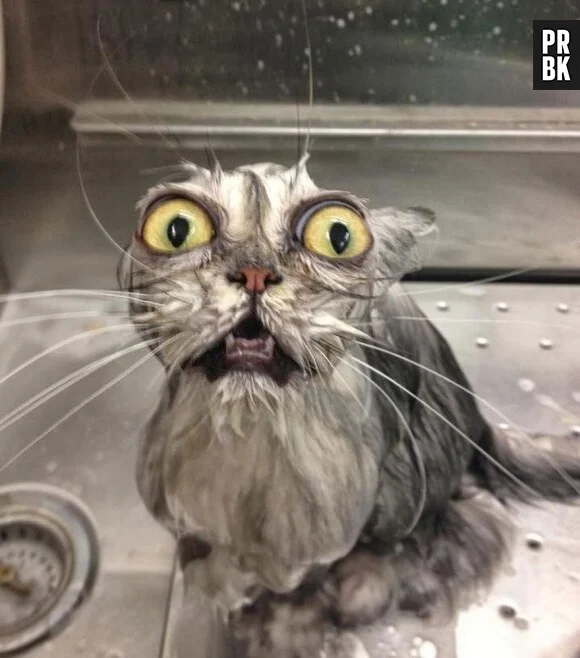
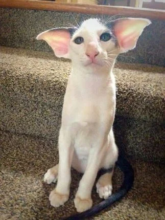
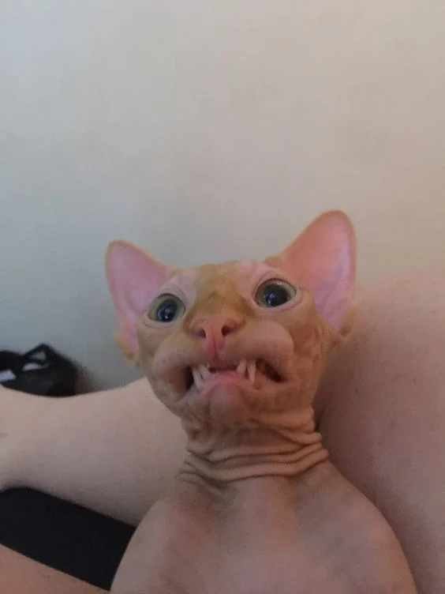
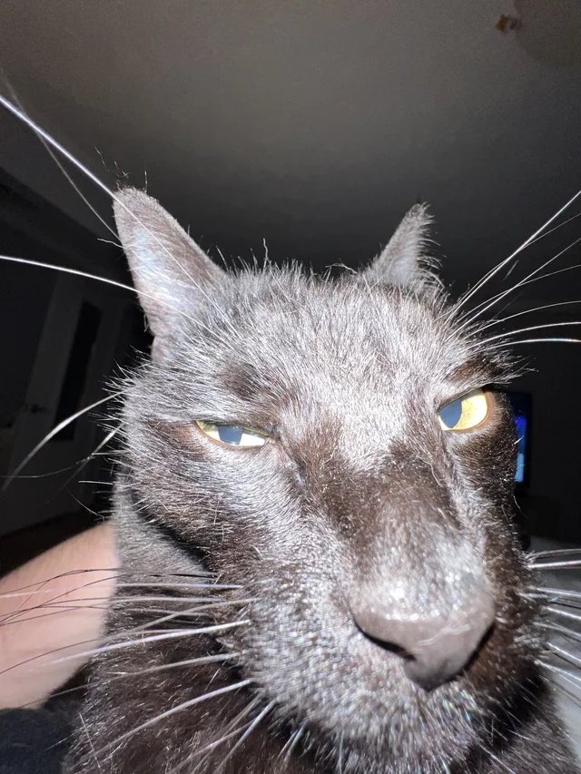

Les chats figurent parmis les animaux les plus mignons de notre planète, entre boules de poils et mignonnerie, on ne sait que choisir ! Cependant, certaines de ces créatures dérogent clairement à la règle.



